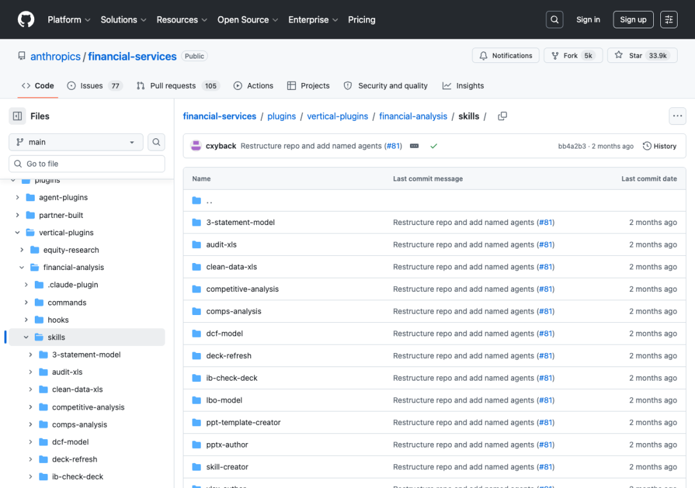
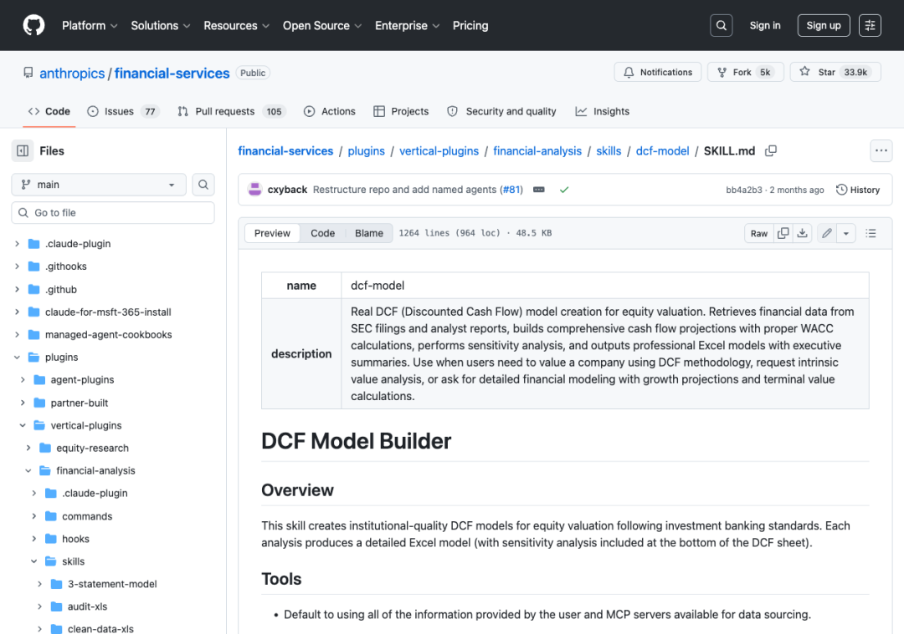

↑↑↑ 点击关注，了解AI干货！！！
MarkTechPost 这两天发了篇教程，说用纯 Python 在 Colab 里复现了 Anthropic 一套内部金融分析架构。
我第一反应是核实这套架构是不是真的。如果是，就又是另一个行业被 AI 占领了高地！
之前提到的 Anthropic 对法律这个知识密集型行业下手了！
AI实测派，公众号：AI实测派47件专利、7个环节、一份Excel，Harvey AI是怎么干完专利分析师的活的
结果一查，仓库真身是 anthropics/financial-services，挂在 Anthropic 官方账号下，33.9k 星，5000 次 fork，不是哪个野生开发者攒的demo。

仓库里分三类插件，智能体插件、垂直行业插件、合作伙伴插件。垂直插件下面又切成七个金融场景，股权研究、财务分析、基金行政、投行、运营、私募股权、财富管理，每个场景堆着一批叫 SKILL.md 的技能文件。
我随手点开 dcf-model 那份。
964 行，48.5 KB，说的是照着投行标准建现金流折现模型，从 SEC 文件和分析师报告取数，算 WACC，算终值敏感性，最后出一份带执行摘要的 Excel。

这不是一句提示词，是一份能单独当文档读的方法论。
MarkTechPost 那篇教程做的事，是写了个 SkillAgent 类。选中哪份技能文件，就把它整篇塞进 Claude 的系统提示词，再配两个工具，一个跑 Python 做计算，一个把结果存成文件。Claude 自己在一个循环里，边算边写，直到任务做完。
三个demo都跑出了东西。DCF 估值配了一张 WACC 和终值增长率的敏感性热力图。可比公司分析直接出一份带表头加粗、列宽自适应的正式 Excel。私募股权那份，给一笔假想的软件收购案写了份投资委员会备忘录草稿。
有人可能会说，这不就是堆了几段提示词吗，能有什么新鲜的？
新鲜的不是提示词本身，是这份方法论被单独存成了一个可维护的文件。金融那批人想改估值口径，不用碰一行代码，改 SKILL.md 就行，这套注册表还能被搜索，被复用，被叠加。
这套模式换个领域一样能跑，法务尽调、医疗诊疗规范、任何一门有成文方法论的专业，都是把文档喂给同一套工具循环。金融只是 Anthropic 第一个拿出来验证的场景。
你所在的行业，有没有一份类似 964 行的方法论文档，值得被这样喂给 AI。
本号每周实测 Claude Code 和新出的 AI 工具，关注我，别错过下一次这样的行业拆解。
⭐ 点赞、转发、在看三连，星标不错过⭐
15 年 Top 外企 IT，专做 AI 落地，边踩坑边记录。同路人，欢迎来。